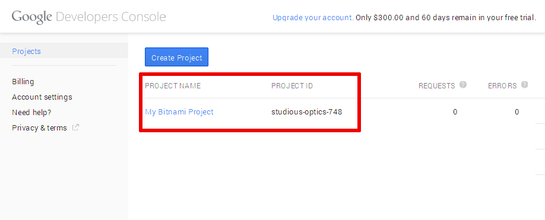
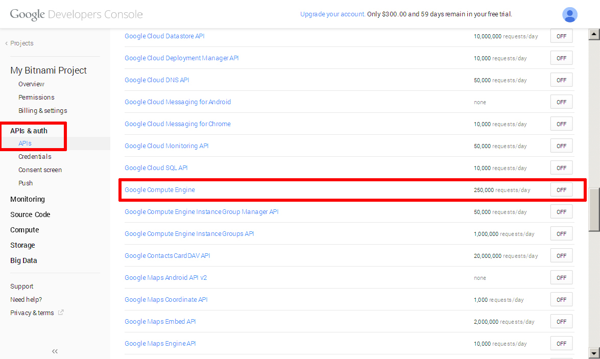
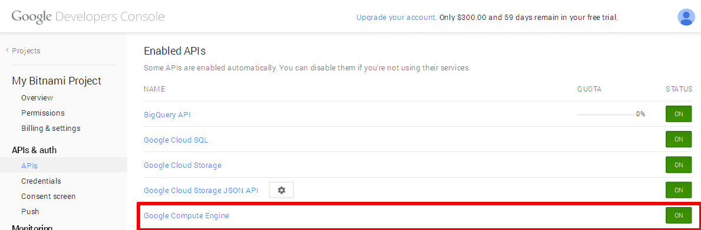
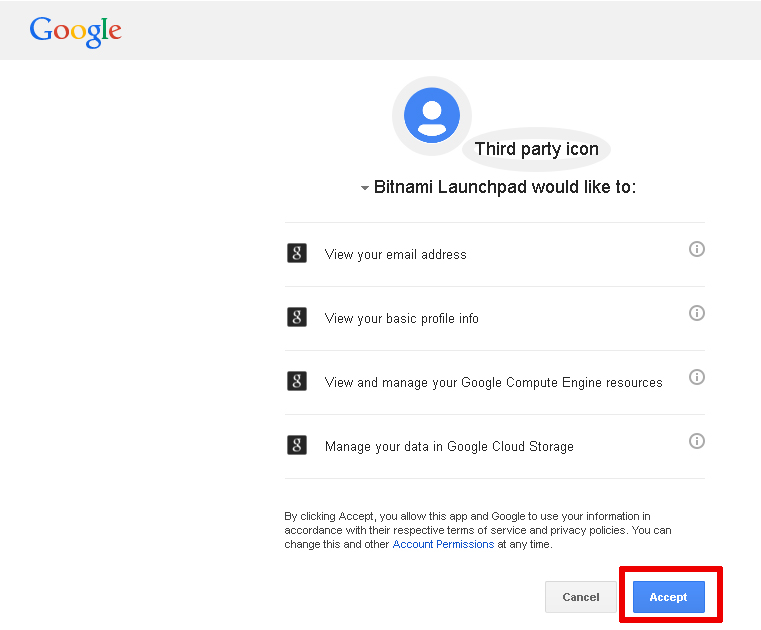
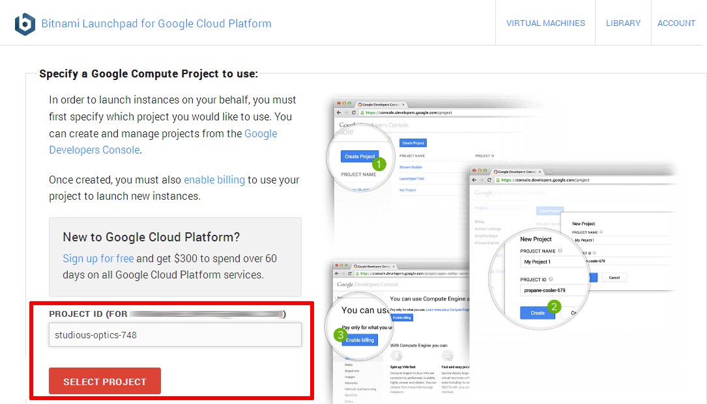
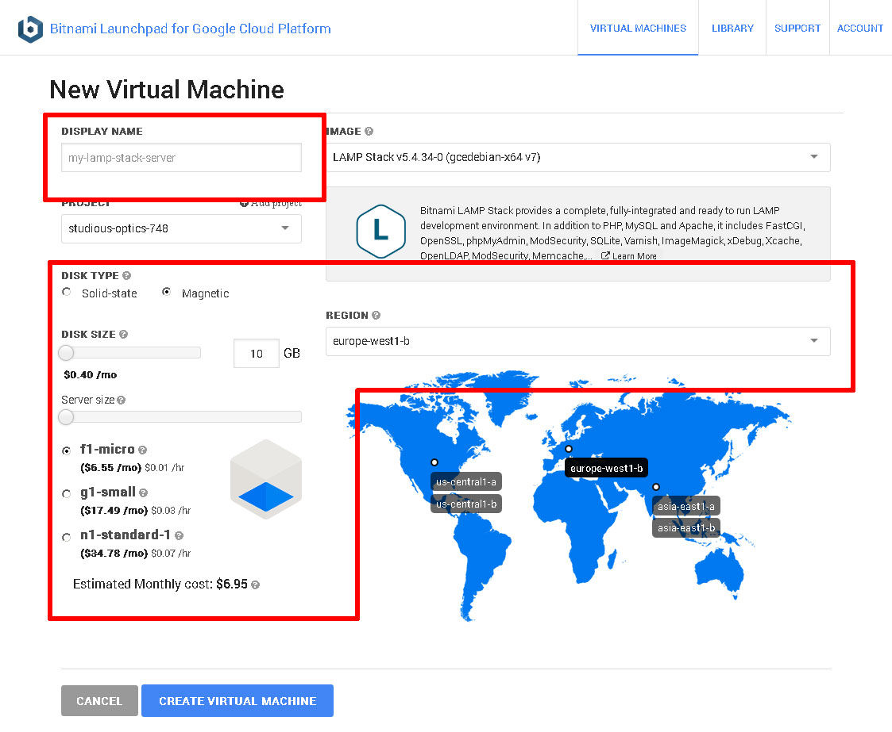
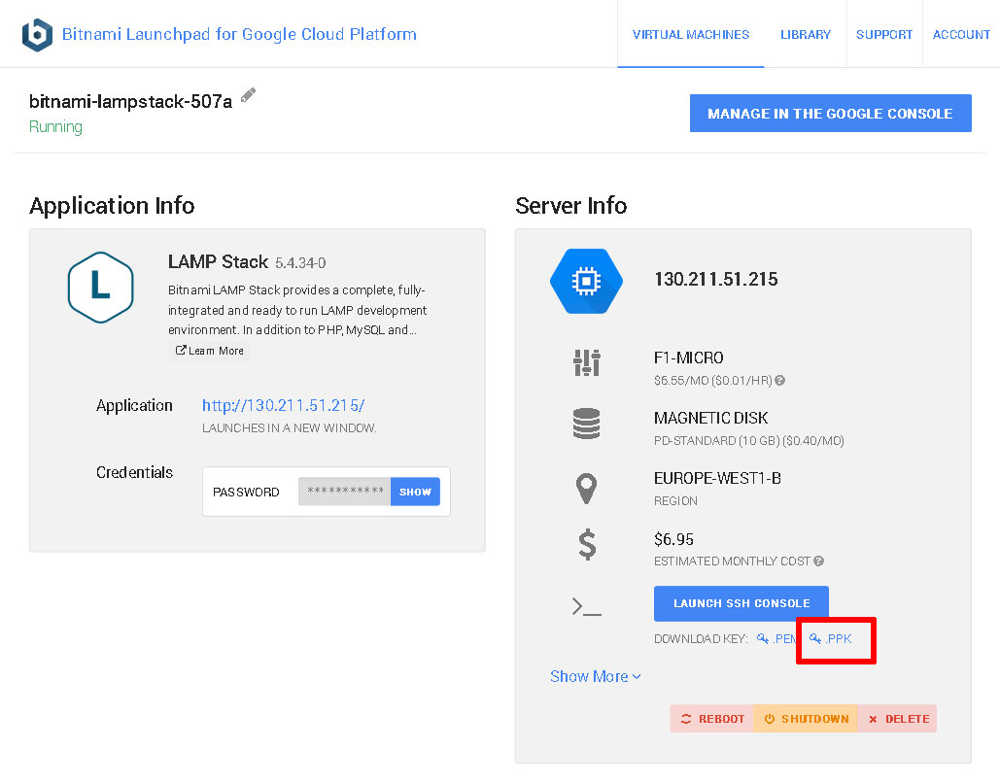
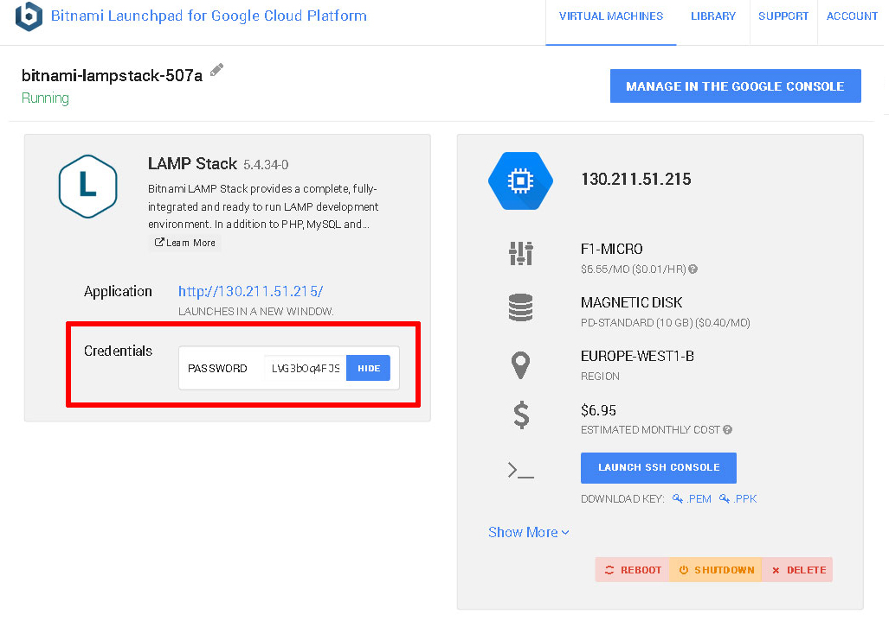

Host your Application in the Google Cloud with XAMPP and Bitnami
Introduction
If you’re a PHP developer building a public-facing Web application, there are a number of good reasons why the cloud should be on your radar. It’s highly scalable, allowing you to quickly scale up if you application turns out to be a hit. It’s cost-efficient, because you only pay for the resources - bandwidth, CPU cycles, memory - you use. And it’s secure, because cloud providers have invested a great deal of time and thought into ring-fencing applications and user data.
However, if you’re new to the cloud or do most of your development locally, getting your PHP application from your local XAMPP box to the cloud can be a bit challenging. That’s where this tutorial comes in. Over the next few pages, I’ll walk you, step by step, through the process of deploying a PHP/MySQL application running on your local XAMPP server, to a cloud server running LAMP packaged by Bitnami. Keep reading!
What You Will Need
Before we begin, a few quick assumptions. This tutorial assumes that you have a XAMPP installation with a working PHP/MariaDB application. It also assumes that you’re familiar with the MariaDB command-line client and that you have a working knowledge of transferring files between servers using FTP.
Now, if you’re new to the cloud, you might be wondering what Google Cloud Platform and Bitnami are. Very briefly, Google Cloud Platform is a cloud service offering, which allows you to easily create Windows and Linux virtual servers online. Bitnami provides pre-packaged server images for these cloud servers, so that you can become productive with them the moment they come online. In short, Google provides the cloud infrastructure, and Bitnami provides the server images and software. And since Google Cloud Platform currently offers a 60-day free trial, you can easily experiment with it without worrying about being billed for usage.
For this tutorial, I’ll be using LAMP packaged by Bitnami, which is Linux-based and bundles PHP, MariaDB and Apache, together with key applications and components like phpMyAdmin, SQLite, Memcache, OpenSSL, APC and cURL. LAMP packaged by Bitnami also includes a number of common PHP frameworks, including the Zend Framework, Symfony, CodeIgniter, CakePHP, Smarty and Laravel.
To deploy your application to the Google cloud with LAMP packaged by Bitnami, here are the steps you’ll follow:
-
Register with Google Cloud Platform
-
Register with Bitnami
-
Connect your Google Cloud Platform and Bitnami accounts
-
Provision a cloud server with LAMP packaged by Bitnami
-
Validate the cloud server
-
Deploy and test your application on the cloud server
The next sections will walk you through these steps in detail.
Step 1: Register with Google Cloud Platform
Begin by creating a Google Cloud Platform account, by browsing to https://cloud.google.com/ and choosing the "Start your free trial" option. You will need an existing Google account to log in and sign up for the free trial; if you don’t have one, you can create one here (remember to keep track of your account username and password, because you’ll need them in the next step).

Once you’ve signed in, provide Google with some personal information and your credit card details.
It’s important to note that you’re signing up for a free trial and your credit card won’t be billed unless you migrate to a paid account. The trial includes $300 of free credit, valid for 60 days. Once the trial ends, your account will automatically be paused and you’ll only be charged if you explicitly choose to upgrade to a paid account.
The Google elves will go away for a minute or so to verify your information and if all is well, you will be redirected to the Google Developers Console, which allows you to manage your billing account, create new projects and get support. You should see that your free trial is now active in the billing credits section.

You should also receive an account confirmation email, which tells you that your account is good to go.
Bitnami uses the Google Compute Engine API in order to manage and launch cloud servers, so this is a good time to enable the API. Plus, new cloud servers always launch within a project, so you’ll also need to create a project. Both these tasks are easy to do from the Google Developers Console. Follow these steps:
-
While you’re logged in to the Google Developers Console, select the "Projects" menu item and click the "Create Project" button.
-
Enter a name for the project (such as "My Bitnami Project") and make a note of the auto-generated project ID.

-
Click "Create" to create and activate the project. You should now see it in the project listing.
 -
Select the new project name in the project listing, and you’ll be transferred to the project information page.
-
Select the "APIs" menu item in the left navigation bar.
-
Look through the list of APIs, or use the API search box to search for the term "compute engine". Find and turn on the Google Compute Engine API.
 -
Verify that the Google Compute Engine API now appears in the list of enabled APIs.

Step 2: Register with Bitnami
The next step is to create a Bitnami account, so that you can launch a cloud server with LAMP packaged by Bitnami image. If you have a Google, Microsoft or Github account, you can use your credentials from those services with Oauth to create your Bitnami account.
If you don’t have accounts with those services (or you don’t want to use them), you can use your email address and password to create a Bitnami account, as described below:
-
Head to the Bitnami sign-up page.
-
Enter your name and email address.
-
Choose a password.
-
Review and agree to the Bitnami terms of service.
Then, use the "Sign up" button to create your account.

Bitnami will send you an email with a verification link which you’ll need to click or browse to, to activate your account. This will also sign you in to your Bitnami account.

Step 3: Connect your Google Cloud Platform and Bitnami Accounts
The easiest way to set up your Google cloud server with LAMP packaged by Bitnami is via the Bitnami Launchpad for Google Cloud Platform, which gives you a simple control panel to provision, start, stop, connect to and check status of your cloud servers. However, to use it, you must first connect your Google Cloud Platform and Bitnami accounts.
To do this:
-
Log in to your Bitnami account if you’re not already logged in.
-
Browse to https://google.bitnami.com/.
-
Select the "Sign in with Bitnami" link in the top right corner.
The Launchpad will recognize your Bitnami credentials and automatically sign you in.
The next step is to set up an administrative password and connect your Google Cloud Platform account with your Bitnami account. To do this:
-
Select "Virtual Machines" in the Launchpad menu.
-
Since this is your first time, you’ll be prompted to set up your Bitnami password vault by entering an administrative password. Enter a hard-to-guess password.

The Bitnami Vault password offers an additional level of protection against misuse: you’ll need to enter it when performing certain operations, such as creating new cloud servers. Again, make sure you note it down for future reference.
Your Bitnami Vault password is different from your Google Account password. -
Once your password has been accepted, you’ll be redirected back to the Launchpad page. Select "Virtual Machines" again in the Launchpad menu.
-
You’ll be transferred to an authorization page, where you can confirm that the Bitnami Launchpad is authorized to connect to your Google Cloud Platform account. Click the "Accept" button on the page to proceed.
 -
You’ll now be redirected back to the Bitnami Launchpad, and asked to select a project within which to launch new cloud servers. Enter the project ID you noted in Step 1.

Your Google Cloud Platform and Bitnami accounts are now connected, and you can launch new cloud servers with Bitnami application stacks.
Step 4: Provision a Google Cloud Platform Server
To provision your Google Cloud Platform server:
-
Select "Library" in the Launchpad menu.
-
Look through the list of applications available in Bitnami until you find LAMP Stack. Select it and click "Launch". If required, enter your administrative password.

-
Define a name, size and region for your cloud server. You can choose from a "micro" server, which uses a shared CPU to a "high CPU" server, which has 16 dedicated virtual cores. For more information, refer to the Google Compute Engine pricing sheet.
A "micro" server will work just fine for most PHP application development tasks.  -
Confirm your selection by hitting the "Create Virtual Machine" button at the end of the page.
The Bitnami Launchpad will now begin spinning up the new server. The process usually takes a few minutes: a status indicator on the page provides a progress update.
Once the cloud server has been provisioned, the status indicator will show that it’s "running", and the Bitnami Launchpad page will display the server details, including its IP address.
At this point, you should be able to browse to the cloud server, either by clicking the link in the Bitnami Launchpad (a new browser tab will open) or entering the cloud server IP address directly into your browser’s address bar. You should see a welcome page like the one below (just so you know, it’s served up by Apache, which is part of LAMP packaged by Bitnami).
Once the server is provisioned, you need to gather the security credentials you will need to begin using it. To do this:
-
Go back to the Bitnami Launchpad for Google Cloud Platform page and in the "Virtual Machines" section, select the running server. This will launch the server information page.
-
From the server information page, download the .ppk file which contains the SSH access credentials you will need to connect to the server. Typically, this file is named using the format bitnami-[google-project]-[nn].ppk. If you’re using Mac OS X or Linux, you should instead download the corresponding .pem file.
 -
By default, Bitnami Launchpad creates a user account named 'user' and an auto-generated password when a new server is provisioned. You will need this password when accessing Bitnami-supplied applications (including MySQL). Go back to the server information screen, look in the "Credentials" section of the "Application Info" panel, and display and make a note of the application password.

The Launchpad page also includes controls to reboot, shut down or delete the server.
Step 5: Test PHP and MariaDB
You can now connect to the cloud server and test PHP to make sure it’s working correctly and has all the extensions you need. The easiest way to do this is with PuTTY, a free SSH client for Windows and UNIX platforms.
-
Download the PuTTY ZIP archive from its website.
-
Extract the contents to a folder on your desktop.
-
Double-click the putty.exe file to bring up the PuTTY configuration window.
-
Enter the host name of your cloud server into the "Host Name (or IP address)" field, as well as into the "Saved Sessions" field.
-
Click "Save" to save the new session so you can reuse it later.

-
In the "Connection → SSH → Tunnels" section, create a secure tunnel for the phpMyAdmin application by forwarding source port "8888" to destination port "localhost:80".
-
Click the "Add" button to add the secure tunnel configuration to the session.
-
In the "Connection → SSH → Auth" section, select the private key file (*.ppk) you saved in the previous step.
-
In the "Connection → Data" section, enter the username 'bitnami' into the "Auto-login username" field.

-
Go back to the "Session" section and save your changes by clicking the "Save" button.
-
Click the "Open" button to open an SSH session to the server.
-
PuTTY will first ask you to confirm the server’s host key and add it to the cache. Go ahead and click "Yes" to this request.

You should now be logged in to your cloud server.

By default, LAMP packaged by Bitnami includes running Apache and MariaDB servers, and all the packages that come with the stack are located in the /opt/bitnami directory. Your first step should be to create a phpinfo.php file in the Apache web server root at /opt/bitnami/apache2/htdocs directory to verify PHP’s capabilities.
shell> cd /opt/bitnami/apache2/htdocs shell> echo "<?php phpinfo(); ?>" > phpinfo.php
Once the file has been copied, browse to http://[your-cloud-server-hostname]/phpinfo.php and you should see the output of the phpinfo() command.

With this, you know that your PHP installation is configured and working correctly.
You can also check that MariaDB is working by launching the MariaDB command-line client at the shell prompt.
shell> mysql -u root -p
When prompted, enter the application password retrieved in the previous step. The client should start up and connect to the local MariaDB server, displaying a welcome message as shown below.

You should also be able to access phpMyAdmin through the secure SSH tunnel you created, by browsing to http://127.0.0.1:8888/phpmyadmin.

To log in, use username 'root' with the application password from the previous step.
In case you’d like to troubleshoot errors or modify the configuration for Apache, PHP or MariaDB - for example, adjusting the maximum upload file size in PHP or changing the path to the MariaDB data directory - here are the locations for key configuration and log files in LAMP packaged by Bitnami:
Configuration file(s) |
Log file(s) |
|
Apache |
/opt/bitnami/apache2/conf/httpd.conf |
/opt/bitnami/apache2/logs/error_log |
PHP |
/opt/bitnami/php/etc/php.ini |
- |
MariaDB |
/opt/bitnami/mariadb/conf/my.cnf |
_/opt/bitnami/mariadb/logs/mysqld.log |
Usually, you’ll need to restart your server(s) for your changes to take effect. LAMP packaged by Bitnami includes a control script that lets you easily stop, start and restart Apache, MariaDB and PHP. The script is located at /opt/bitnami/ctlscript.sh. Call it without any arguments to restart all services:
shell> sudo /opt/bitnami/ctlscript.sh restart
Or use it to restart a specific service only by passing the service name as argument - for example 'mariadb':
shell> sudo /opt/bitnami/ctlscript.sh restart mariadb
image::common/mariadb-restart.jpg
Step 6: Deploy the XAMPP Application to the Cloud Server
Your cloud server is now provisioned, secured and has a functional PHP/MariaDB environment. All that’s left is for you to transfer your application code from your local XAMPP environment to your cloud server and set up the database.
The easiest way to transfer files to the server is with FTP or SFTP. Although you can use any FTP/SFTP client, I like FileZilla, a cross-platform, open source and feature-rich client. Download it from the FileZilla website and install it using the automated installer - it’s a quick process, only requiring you to agree to the license, choose the components (the default selection is usually fine) and specify the installation directory.

Once FileZilla is installed, launch it and you’ll arrive at the main split-screen interface, one side for your local directories and the other for remote directories.

To connect to the cloud server and deploy your application, follow these steps:
-
Use the "Edit → Settings" command to bring up FileZilla’s configuration settings.
-
Within the "Connection → SFTP" section, use the "Add keyfile" command to select the private key file for your server. FileZilla will use this private key to log in to the cloud server.
-
Use the "File → Site Manager → New Site" command to bring up the FileZilla Site Manager, where you can set up a connection to your cloud server.
-
Enter your server host name or IP address and user name.
-
Select "SFTP" as the protocol and "Normal" as the logon type.

-
Use the "Connect" button to connect to the cloud server and begin an SFTP session.
-
On the remote server side of the window, change to the /opt/bitnami/apache2/htdocs directory
-
On the local server side of the window, change to the directory containing your application code.
-
Upload your XAMPP application code to the remote directory by dragging and dropping the files from the local server to the cloud server (you can back up the original contents of the directory if you wish, by downloading them first).

-
Once the files are transferred, log in to the server console using PuTTY.
-
Create a database for the application using the MariaDB command-line client (you can use phpMyAdmin if you prefer a graphical interface). For example, since the application is a to-do list, let’s call the database 'tasks'.
mysql> CREATE DATABASE tasks;
-
Follow best practices and create a separate MariaDB user with privileges to access only this database.
mysql> GRANT ALL ON tasks.* TO 'tasks'@'localhost' IDENTIFIED BY 'klio89';

-
If required, update database credentials in your application. Then, install the application schema in the new database (assuming you already uploaded it with the application code). For example, you can use the following command with the MariaDB command-line client:
shell> mysql -u tasks -D tasks -p < schema/tasks.sql

If you’re logged in to phpMyAdmin, you can also import the database schema from your local XAMPP system. To do this, select the "Import" tab of the phpMyAdmin dashboard, select the file containing the schema, and click "Go" to have the tables created in your selected database.
Browse to your cloud server’s host name and your application should be active. Here are a few screenshots of the example to-do list application running on the cloud server.

Congratulations! You’ve successfully deployed your XAMPP application in the cloud.
Improve Application Performance
Web application performance problems are hard to debug at the best of times, and more so when your server is in the cloud and running a pre-packaged stack. The responsiveness of your application at any given moment depends on numerous factors: server type, network bandwidth, cloud provider load, database load, caching system in use, application code structure, query structure and various other variables.
| LAMP packaged by Bitnami already uses the Apache Event MPM and PHP-FPM for reduced memory usage and an increase in the number of simultaneous requests that the server can handle (more information). It also comes with the mod_pagespeed Apache module activated to rewrite pages on the fly and improve latency. |
If you’re finding that your PHP/MariaDB application’s performance is not up to scratch, here are a few general tips you can consider:
-
LAMP packaged by Bitnami includes APCu, a popular PHP bytecode cache. Usually, when a PHP script is executed, the PHP compiler converts the script to opcodes and then executes the opcodes. APC provides a framework for opcode caching, thereby speeding up PHP applications without needing any code changes. Make sure your APC cache has enough memory and a long TTL. Read more about APCu and how to use APC with PHP and Bitnami.
-
LAMP packaged by Bitnami also includes the PHP memcache extension. Memcache is a high-performance, distributed memory object caching system. Consider using memcache to store frequently-accessed fragments of data in memory as arrays, thereby reducing the load on your MariaDB database server. Read more about memcache in PHP.
-
Turn on MariaDB’s slow query log and set MariaDB’s 'long_query_time' variable to a low number. This lets you track which of your queries are performing inefficiently and adjust them, either structurally or by applying table indexes as needed, to improve performance. You can use tools like mysqldumpslow or mysql-slow-query-log-visualizer to parse and analyze the slow query logs generated.
-
If your application is database-heavy, you’ll gain performance by giving the MariaDB server more memory. You may use the MariaDB Optimization and Tuning guides, to identify which server parameters need tuning, and incrementally make changes to your server’s cache and buffers to improve performance. For example, if your tables are all MyISAM, disable InnoDB in your my.cnf file to save further memory.
-
Unload Apache modules which you don’t need to save memory, and adjust the log level to errors only.
-
Minify your JavaScript code, and consider using a CDN for static content like images.
Good luck, and happy coding!
Useful Links
About the author
Vikram Vaswani is the founder of Melonfire, an open source software consultancy firm, and the author of seven books on PHP, MySQL and XML development. Read more about him at http://vikram-vaswani.in/.